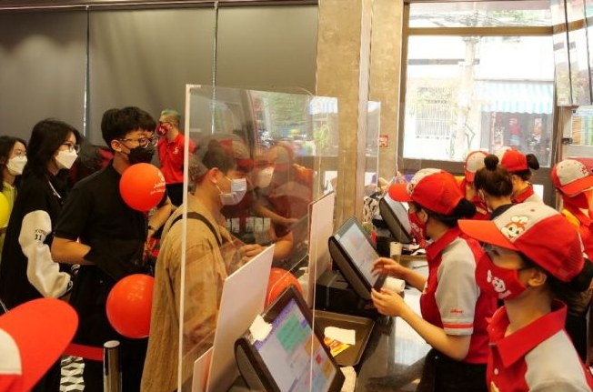

Global Trade
Countries exchange goods and services from around the world.
My Globalization Atlas
01 / 09
Understanding how the world becomes connected.
In our own words
Globalization is the growing connection between countries through trade, technology, communication, people, and ideas.
Countries exchange goods and services from around the world.
People travel or move to other countries for work, education, or other opportunities.
Technology helps people in different countries communicate and share information quickly.
Jollibee opening branches in other countries is an example of globalization.

It shows how a Filipino business can expand and serve customers across national borders.